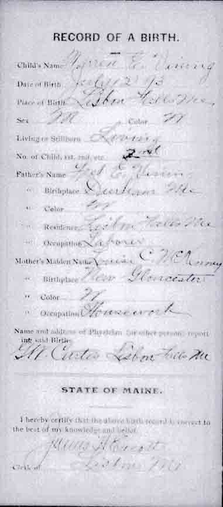
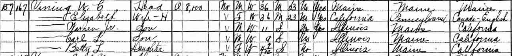
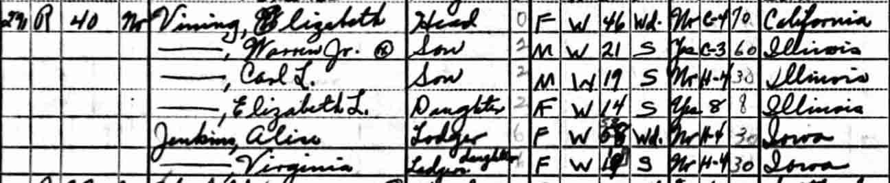
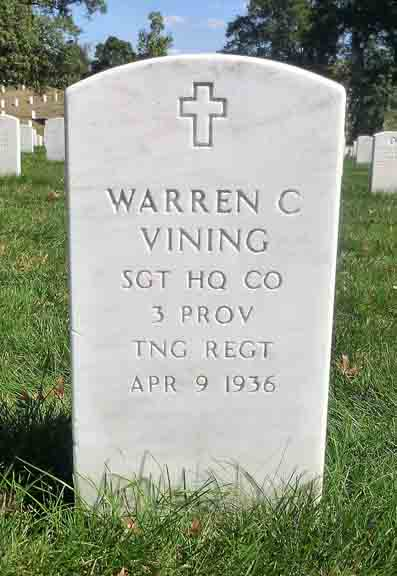

Birth Data
Birth record for Warren Clifford Vining (from Maine State Archives):
Census Data
| 1920 | 1930 | 1940 | |
| Warren Clifford Vining | 26 | 36 | dead |
| Elizabeth Rosie (Vogel) Vining | 25 | 36 | 46 |
| Warren Clifford Vining Jr. | 1 year, [2?] months | 11 | 21 |
| Carl Louis Vining | 9 | 19 | |
| Elizabeth Louise Vining | 4 y., 7 m. | 14 |


Death Data
Gravestone for Warren Clifford Vining, in Arlington National Cemetery, Arlington, Arlington County, Virginia (from Find A Grave):